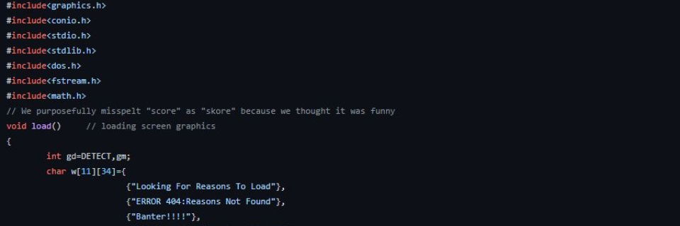
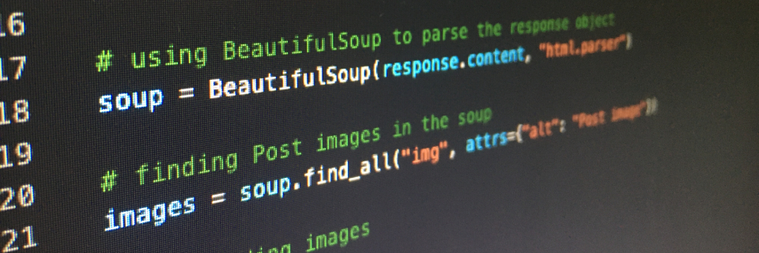

What is my story so far?
I was born in New Delhi, India, in 1999. At 22, I have lived (spent at least three years) in 4 countries - India (1999 - 2007, 2015 - 2017), Singapore (2007 - 2010), United Arab Emirates (2010 - 2015), and the United States (2017 - Present) - which has provided me with a unique global experience.
I completed my 9th and 10th grades (first and second year of high school) at Delhi Private School - Dubai.
I transferred to Delhi Public School - Noida to finish my 11th and 12th grades (third and fourth year of high school).
The different cultures, opportunities, and environments induced holistic growth, with traits such as adaptability, flexibility, and tenacity notably honed.
Transferring schools from one country to the other never gets any easier. Despite the challenges, I put in the work to earn the A.J Drexel Scholarship which allowed me to attend Drexel University.

What got me into programming?
I learned programming in 6th grade, which revealed my affinity for it.
Through 11th and 12th grade (junior and senior year of high school), I learned Turbo C++ as my first OOP language and SQL as my first DBMS language.
I enjoy learning new concepts and ideas, leading me to make my first game project, Overlap (a 2D puzzle game with a development story best shared through word of mouth).
My motivation came from my innate passion for solving problems and creating large systems to work together.
Through the development of Overlap, I pushed myself to learn concepts outside the outlined syllabus and taught myself how to use the graphics library to visualize the elements of the game.
Programming games is similar to designing large systems and ensuring they all interact with each other as intended.
My excellent understanding of the basic OOP programming concepts and data structures allowed me to design, program, and optimize the project to a great extent.

Why did I choose to study what I did?
Having developed a passion for programming, I was motivated by my high school game development success to pursue a degree in computer science with a focus on game programming and development.
Later, I decided to incorporate an artificial intelligence track into my studies, which required additional courses on top of the core curriculum for computer science majors.
I completed my degree with almost two terms' worth of extra coursework in keeping with my drive for excellence.
Out of interest in learning, I took classes in Mathematics, Open Data Research, Animation, Game Art and Programming, Photography, Philosophy, Psychology, and a few more.
I excelled in my computer science classes, becoming a teaching assistant for CS281 (Systems Architecture) and CS375 (Web Development).
Some of my favorite classes include (but are not limited to) -
CS380 (Artificial Intelligence),
CS383 (Machine Learning),
CS260 (Data Structures),
VRIM100 (Digital Tools for AR/VR),
PHIL351 (Philosophy of Technology), and
PHIL311 (Ethics and Information Technology).
What do I like outside of class?
Outside classes, I love traveling, photography (check out my Instagram), writing, working out, and playing sports. I played football (soccer) and tennis throughout my time in high school.
At the start of Drexel, I challenged myself by learning fencing, a niche sport I've never done before, and became a part of the Drexel Fencing Club.
Through hard work, dedication, and tenacity, I got 3rd at the BWCFC fencing championships consisting of 13 schools from the east coast.
As a team, we secured the 2nd position for my weapon type, Epee.
Beyond fencing, I'm also a member of Drexel Speaks (public speaking club) and the Drexel E-Sports and Gaming Association.
At DPS Noida, I was part of the highly selective Photography Club, the Debate Club, and an active eSpice (Computer Club) member where I represented DPS Noida at multiple competitions.
Between hackathons, game jams, and research projects, I've been able to explore my interests in a variety of fields with my developed skillset from 15 years of programming.
One such project was the analysis of the US Census Demographics Data where I used Python and Pandas to highlight evidence of Redlining in the city.
The result of this research highlighted a concentration of lower income & minority populations concentrated near industrial zones & traffic-heavy areas of Philadelphia.